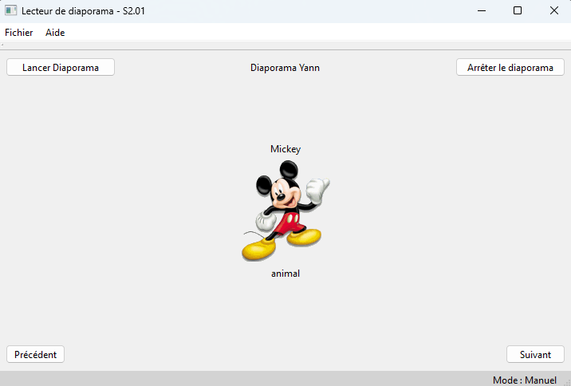
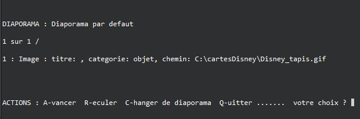
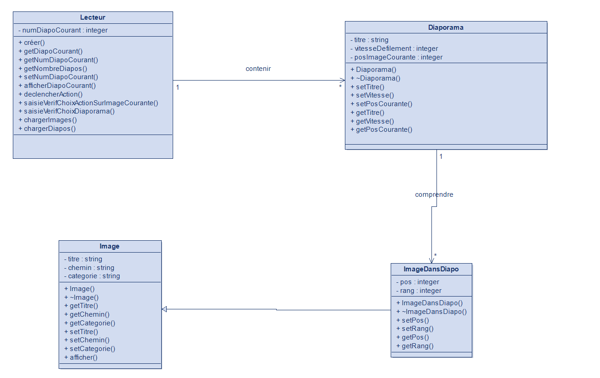

Lecteur de Diaporama
Description :
Le but de ce projet était de créer pas à pas un lecteur de diaporama qui fonctionne avec des images (gif)
stockés sur la machine
et avec l'applications reliée à une base de données locale pour avoir les informations des diaporamas.
Le projet était par groupe de 3,
il était à faire sur Qt Creator en C++, puis implémenter une base de données contenant les informations
des diaporamas.

Le projet a été réalisé en 6 étapes (versions) :
- Version 1 : Mise en classes de la v0 fournie, création de diagramme de classes en UML, documentation des classes créer à partir de la v0.
Aucune interface graphique n'était demandé juste une éxécution en console.


- Version 2 : Création de l'interface de l'application, avec tout les boutons fonctionnels
- Version 3 : Ajout de la fonctionnalité de lecture des images en boucle
- Version 4 : Ajout de la fonctionnalité de lecture des images en boucle avec un délai entre chaque
image
- Version 5 : Ajout de la fonctionnalité de lecture des images en boucle avec un délai entre chaque
image et la possibilité de changer le délai
- Version 6 : Ajout de la fonctionnalité de lecture des images en boucle avec un délai entre chaque
image et la possibilité de changer le délai, et ajout de la base de données